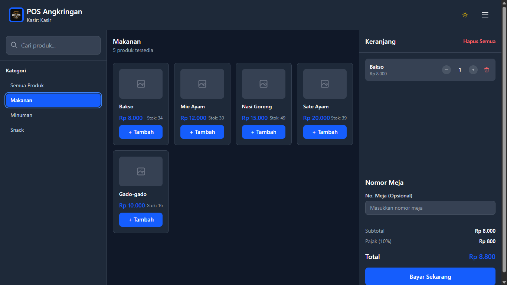

Fitur Utama (Interface Kasir)
Otentikasi & Akuntabilitas
Memastikan setiap transaksi terverifikasi oleh staf berwenang (Kasir/Admin) melalui sistem login terpisah.

Katalog Lengkap & Stok Real-Time
Akses ke keseluruhan produk dengan informasi stok real-time untuk menghindari out-of-stock saat bertransaksi.

Filter Cepat Makanan
Navigasi menu dioptimalkan untuk memproses pesanan hidangan utama dan makanan berat secara instan.
Filter Cepat Minuman
Memungkinkan kasir fokus pada menu minuman tanpa gangguan visual dari item lain.
Filter Cepat Snack
Menyederhanakan workflow saat pelanggan hanya membeli camilan atau side dish.
Multi-Pembayaran & Midtrans Integration
Integrasi pembayaran non-tunai dan tunai, dilengkapi fitur Draft Pesanan untuk efisiensi antrian.